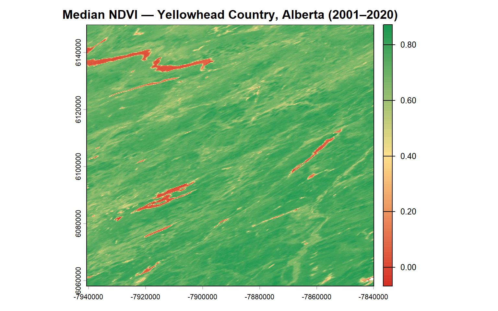
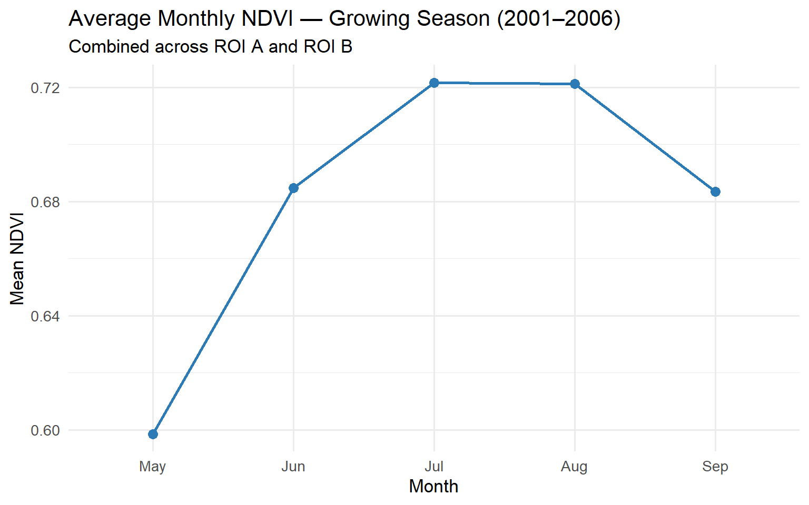
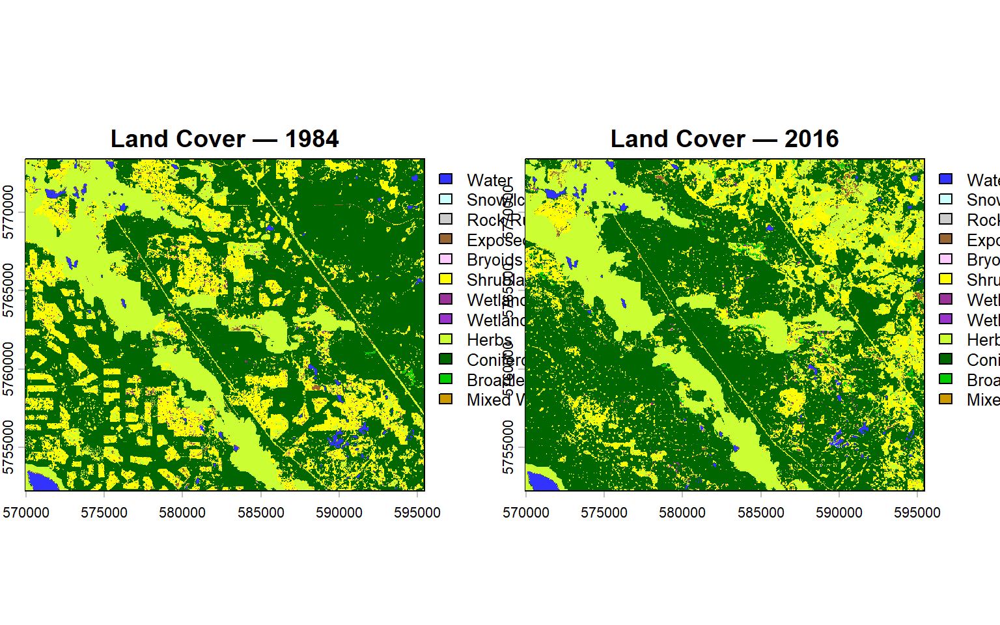
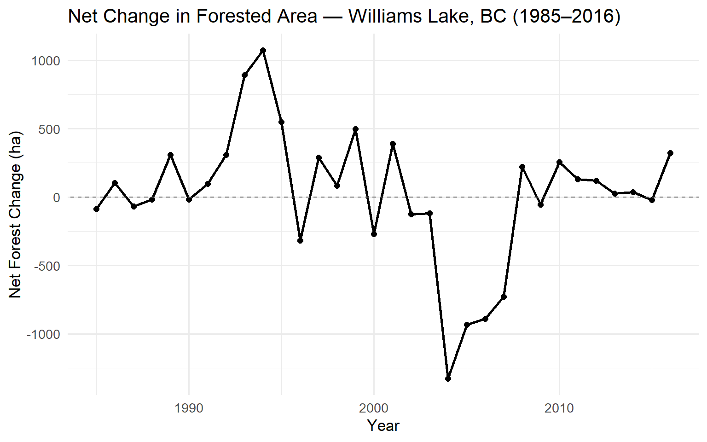

# Spatial data handling
library(terra)
library(sf)
# Data manipulation
library(readr)
library(stringr)
library(lubridate)
library(dplyr)
library(tidyr)
# Visualization
library(ggplot2)
# Change detection
library(bfast)Vegetation Change & Forest Dynamics in Alberta and British Columbia
A Remote Sensing Analysis Using MODIS NDVI and Landsat Land Cover Data
Overview
This project applies remote sensing and spatial data analysis techniques in R to investigate vegetation change across two regions of western Canada. The analysis is split into two complementary parts:
Part 1 examines a MODIS NDVI time series (2001–2020) in Yellowhead Country, Alberta, using the BFAST change detection algorithm to identify and characterize abrupt vegetation disturbances.
Part 2 analyzes a 33-year Landsat-derived land cover time series near Williams Lake, BC, to quantify forest gain, loss, and net change over time.
Together, these analyses demonstrate how freely available satellite data can be used to monitor ecosystem dynamics at regional scales — a critical capability for forest management, conservation planning, and disturbance ecology.
Dependencies
Part 1: MODIS NDVI Time Series — Yellowhead Country, Alberta
Dataset
This analysis uses the MOD13Q1 MODIS Terra product, a 16-day composite NDVI dataset at 250 m spatial resolution. The dataset spans from February 2000 to present and provides NDVI values in the range of -2000 to 10000 (scaled integers). The study area covers a region in Yellowhead Country, Alberta, where two regions of interest (ROIs) were selected to investigate distinct disturbance events.
Loading and Preparing the Time Series
The time series consists of 460 individual GeoTIFF files (23 images per year × 20 years), each named with a Julian date identifier. Dates are parsed directly from filenames and used to label raster layers for traceability.
# Load all NDVI .tif files
flist <- list.files(
path = "data/MOD13Q1_TS",
pattern = "tif$",
full.names = TRUE
)
# Extract and parse acquisition dates from filenames
fname <- basename(flist)
date_ts <- str_sub(fname, start = 10, end = 16)
date_ts <- as_date(date_ts, format = "%Y%j")
# Summarize temporal coverage
data.frame(Dates = date_ts) %>%
mutate(Year = year(Dates)) %>%
group_by(Year) %>%
summarise(`Images per Year` = n())# A tibble: 20 × 2
Year `Images per Year`
<dbl> <int>
1 2001 23
2 2002 23
3 2003 23
4 2004 23
5 2005 23
6 2006 23
7 2007 23
8 2008 23
9 2009 23
10 2010 23
11 2011 23
12 2012 23
13 2013 23
14 2014 23
15 2015 23
16 2016 23
17 2017 23
18 2018 23
19 2019 23
20 2020 23The time series spans 2001 to 2020, with a consistent acquisition frequency of 23 images per year, reflecting the 16-day revisit cycle of the MODIS Terra platform.
Median NDVI Composite
To visualize the baseline vegetation condition of the study area, a pixel-wise median NDVI composite is calculated across all 460 layers. The median is preferred over the mean as it is more robust to outliers caused by residual cloud contamination or sensor noise.
# Stack all layers into a SpatRaster
ndvi_ts <- rast(flist)
names(ndvi_ts) <- date_ts
# Compute per-pixel median across the full time series
ndvi_ts_median <- app(ndvi_ts, fun = "median", na.rm = TRUE)
plot(ndvi_ts_median,
main = "Median NDVI — Yellowhead Country, Alberta (2001–2020)",
col = colorRampPalette(c("#d73027", "#fee08b", "#1a9850"))(100))
ROI Extraction and Seasonal NDVI Analysis
Two regions of interest (ROIs) are extracted from the time series to compare vegetation dynamics. Average NDVI values are extracted for each ROI and each time step, then filtered to examine May–September growing season conditions from 2001 to 2006.
# Load ROI shapefile
roi <- st_read("data/roi_MOD13Q1.shp")Reading layer `roi_MOD13Q1' from data source
`C:\Users\achisale.stu\Documents\MGEM\Term 1\GEM 520\Labs\Lab 7\Lab7_data (1)\data\roi_MOD13Q1.shp'
using driver `ESRI Shapefile'
Simple feature collection with 2 features and 1 field
Geometry type: POINT
Dimension: XY
Bounding box: xmin: -7885506 ymin: 6129112 xmax: -7873407 ymax: 6133884
Projected CRS: unnamed# Extract mean NDVI per ROI per time step
ndvi_roi <- terra::extract(ndvi_ts, vect(roi), fun = "mean", na.rm = TRUE)
# Reshape to long format
ndvi_roi_long <- ndvi_roi %>%
pivot_longer(
cols = -ID,
names_to = "date",
values_to = "ndvi"
) %>%
mutate(date = as_date(date, format = "%Y-%m-%d"))
# Compute monthly growing-season averages (2001–2006)
ndvi_roi_summary <- ndvi_roi_long %>%
mutate(
year = year(date),
month = month(date)
) %>%
filter(month >= 5 & month <= 9,
year <= 2006) %>%
group_by(month) %>%
summarise(mean_ndvi = mean(ndvi, na.rm = TRUE))ggplot(ndvi_roi_summary, aes(x = factor(month), y = mean_ndvi, group = 1)) +
geom_line(color = "#2c7bb6", linewidth = 1) +
geom_point(color = "#2c7bb6", size = 3) +
scale_x_discrete(labels = c("May", "Jun", "Jul", "Aug", "Sep")) +
labs(
title = "Average Monthly NDVI — Growing Season (2001–2006)",
subtitle = "Combined across ROI A and ROI B",
x = "Month",
y = "Mean NDVI"
) +
theme_minimal(base_size = 13)
July consistently shows the highest average NDVI, which aligns with peak canopy greenness during the boreal growing season in Alberta.
BFAST Change Detection
The BFAST Monitor algorithm (bfastmonitor) is used to detect structural breaks in the NDVI time series at each ROI. BFAST fits a harmonic seasonal model to a historical baseline period and then flags deviations in a subsequent monitoring period, making it well-suited for detecting disturbances like wildfires, harvesting, or insect outbreaks.
# Separate time series by ROI
ndvi_roi_A <- filter(ndvi_roi_long, ID == 1)
ndvi_roi_B <- filter(ndvi_roi_long, ID == 2)
# Convert to ts objects (23 observations per year)
ndvi_roi_A_ts <- ts(ndvi_roi_A$ndvi, frequency = 23, start = c(2001, 1))
ndvi_roi_B_ts <- ts(ndvi_roi_B$ndvi, frequency = 23, start = c(2001, 1))bfm_A <- bfastmonitor(ndvi_roi_A_ts, start = c(2008, 1))
plot(bfm_A, main = "BFAST Monitor — ROI A (Monitoring from 2008)")
bfm_B <- bfastmonitor(ndvi_roi_B_ts, start = c(2006, 1))
plot(bfm_B, main = "BFAST Monitor — ROI B (Monitoring from 2006)")
Interpretation
| ROI A | ROI B | |
|---|---|---|
| Break detected | ~2011 | ~2008 |
| Direction of change | Decrease | Decrease then recovery |
| Likely cause | Stand-replacing disturbance (e.g. wildfire or harvest); NDVI remains depressed at a new lower equilibrium with no clear recovery trend | Disturbance followed by vegetation regrowth; NDVI rebounds toward pre-disturbance levels over subsequent years, suggesting natural regeneration |
The contrasting post-break trajectories at the two ROIs highlight how BFAST can distinguish not just when a disturbance occurred, but whether recovery is underway — a key distinction for ecosystem monitoring.
Part 2: Land Cover Change — Williams Lake, BC
Dataset
The land cover time series is derived from the Virtual Land Cover Engine (VLCE), a Landsat-based classification system developed by Hermosilla et al. (2017). It covers 1984–2016 at 30 m resolution, classifying pixels into 12 categories including multiple forest types, shrubland, wetlands, and open land classes. The study area (~25 × 20 km) is located near Williams Lake, BC, a region with active forest harvesting and regeneration.
Loading the Land Cover Time Series
# Load all VLCE annual maps
flist_vlce <- list.files(
"data/VLCE_TS",
pattern = "tif$",
full.names = TRUE
)
# Extract years from filenames
year_ts <- str_extract(flist_vlce, pattern = "[0-9]{4}")
# Stack into a single SpatRaster and label by year
vlce_ts <- rast(flist_vlce)
names(vlce_ts) <- year_tsVisualizing Land Cover Change: 1984 vs. 2016
plot(c(vlce_ts$`1984`, vlce_ts$`2016`),
main = c("Land Cover — 1984", "Land Cover — 2016"))
Comparing the two endpoints of the time series, coniferous forest shows the most dramatic change — large patches converted to shrubland consistent with harvesting activity, while adjacent shrubland areas have transitioned back to forest, reflecting regeneration of previously harvested stands. Water bodies and herb-dominated areas remain largely stable across the 33-year period.
Reclassifying to Forested / Non-Forested
To quantify forest dynamics, all land cover classes are reclassified into a binary forested (1) / non-forested (0) scheme. Forest classes include: Coniferous, Broadleaf, Mixed Wood, and Wetland-Treed.
# Load reclassification lookup table
lc_class <- read.csv("data/lc_reclassification.csv")
# Build reclassification matrix (original value → new value)
class_mat <- cbind(lc_class$org_value, lc_class$new_value)
# Apply reclassification
ts_forested <- classify(vlce_ts, class_mat)Detecting Annual Forest Gain and Loss
A lagged difference (year t minus year t-1) is computed for each pixel. This produces a change layer where:
- A value of +1 indicates forest gain (non-forested → forested)
- A value of -1 indicates forest loss (forested → non-forested)
- A value of 0 indicates no change
# Compute year-on-year difference
ts_forested_diff <- diff(ts_forested, lag = 1)Quantifying Forest Area Change Over Time
Forest gain and loss are calculated annually in hectares, based on the 30 m pixel resolution (1 pixel = 900 m² = 0.09 ha).
# Annual forest gain (pixels transitioning from 0 → 1)
count_gain <- global(ts_forested_diff == 1, "sum", na.rm = TRUE)
forest_gain <- data.frame(
year = as.integer(rownames(count_gain)),
gain = count_gain$sum * 900 / 10000
)
# Annual forest loss (pixels transitioning from 1 → 0)
count_loss <- global(ts_forested_diff == -1, "sum", na.rm = TRUE)
forest_loss <- data.frame(
year = as.integer(rownames(count_loss)),
loss = count_loss$sum * 900 / 10000
)
# Combine and compute net change
forest_change <- inner_join(forest_gain, forest_loss, by = "year") %>%
mutate(net_change = gain - loss)Results: Net Forest Area Change (1985–2016)
ggplot(forest_change, aes(x = year, y = net_change)) +
geom_line(color = "black", linewidth = 1) +
geom_point(color = "black", size = 2) +
geom_abline(slope = 0, intercept = 0, linetype = "dashed", color = "grey40") +
labs(
title = "Net Change in Forested Area — Williams Lake, BC (1985–2016)",
x = "Year",
y = "Net Forest Change (ha)"
) +
theme_minimal(base_size = 13)
Results: Annual Forest Gain and Loss (1985–2016)
# Reshape for grouped bar chart
forest_change_long <- forest_change %>%
select(year, gain, loss) %>%
pivot_longer(cols = c(gain, loss), names_to = "type", values_to = "area_ha") %>%
mutate(type = recode(type, gain = "Forest Gain", loss = "Forest Loss"))
ggplot(forest_change_long, aes(x = year, y = area_ha, fill = type)) +
geom_bar(stat = "identity", position = "dodge") +
scale_fill_manual(values = c("Forest Gain" = "#1a9850", "Forest Loss" = "#d73027")) +
labs(
title = "Annual Forest Gain and Loss — Williams Lake, BC (1985–2016)",
x = "Year",
y = "Area (ha)",
fill = NULL
) +
theme_minimal(base_size = 13) +
theme(legend.position = "top")
The gain/loss breakdown reveals distinct periods of intensive harvesting (years with large loss spikes) followed by multi-year recovery windows where gain exceeds loss. This pattern is characteristic of managed boreal and montane forests in BC, where clear-cut blocks are replanted and monitored under provincial forestry regulations.
Conclusions
This analysis demonstrates the complementary value of two open satellite data streams for ecosystem monitoring:
MODIS NDVI (Part 1) provided the temporal density needed to detect and characterize disturbance events using BFAST, distinguishing between permanent vegetation loss (ROI A) and disturbance followed by recovery (ROI B). The 16-day revisit cycle and 20-year archive make MODIS well-suited for monitoring phenological change and sudden disturbances at landscape scales.
Landsat Land Cover (Part 2) provided the spatial detail and long historical record needed to quantify annual forest area dynamics near Williams Lake. The 33-year time series clearly captures the cyclical pattern of harvesting and regeneration characteristic of actively managed forests in British Columbia.
Together, these tools illustrate how multi-sensor, multi-temporal remote sensing approaches can support evidence-based forest management and ecosystem assessment — from detecting individual disturbance events to tracking landscape-scale land cover transitions over decades.
References
Didan, K. (2015). MOD13Q1 MODIS/Terra Vegetation Indices 16-Day L3 Global 250m SIN Grid V006. NASA EOSDIS Land Processes DAAC. https://doi.org/10.5067/MODIS/MOD13Q1.006
Hermosilla, T., Wulder, M. A., White, J. C., Coops, N. C., & Hobart, G. W. (2018). Disturbance-informed annual land cover classification maps of Canada’s forested ecosystems for a 29-year Landsat time series. Canadian Journal of Remote Sensing, 44(1), 67–87.
Verbesselt, J., Zeileis, A., & Herold, M. (2012). Near real-time disturbance detection using satellite image time series. Remote Sensing of Environment, 123, 98–108.